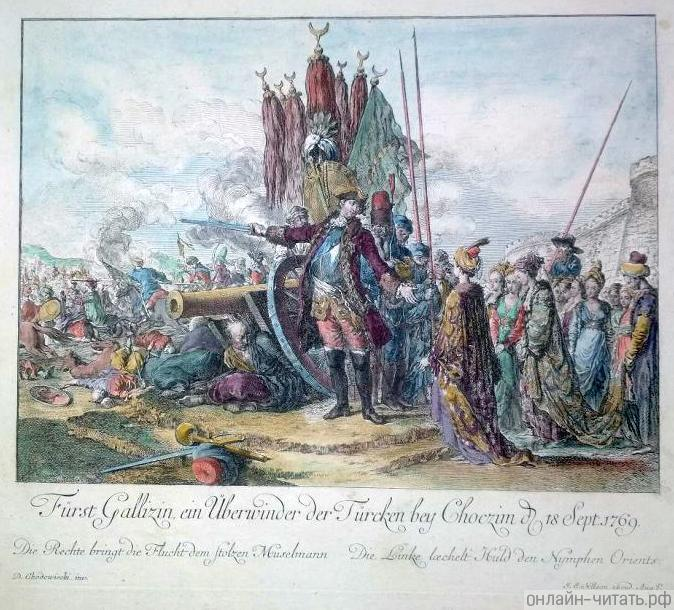
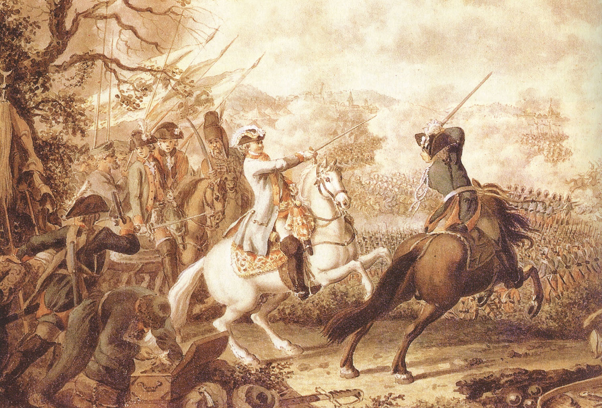
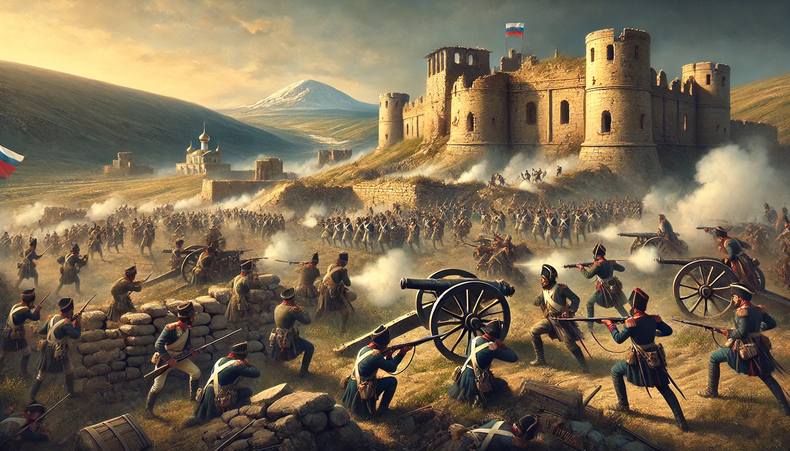

Предпосылки войны
Русско-турецкая война 1768–1774 годов началась на фоне политического кризиса в Польше, где усиливались противоречия между королём Станиславом Августом Понятовским и шляхтой. Король, зависевший от поддержки России, вызывал раздражение как внутри страны, так и у внешних врагов. Инцидент в польском городе Балта стал формальным поводом для начала конфликта. Российские казаки, преследуя польских повстанцев, пересекли границу Османской империи, что Турция использовала как предлог для обвинений России. Султан Мустафа III, опираясь на этот инцидент, объявил войну Российской империи 25 сентября 1768 года.
-
Кампания 1769 г.

-
Кампания 1770 г.

-
Кампания 1771 г.
